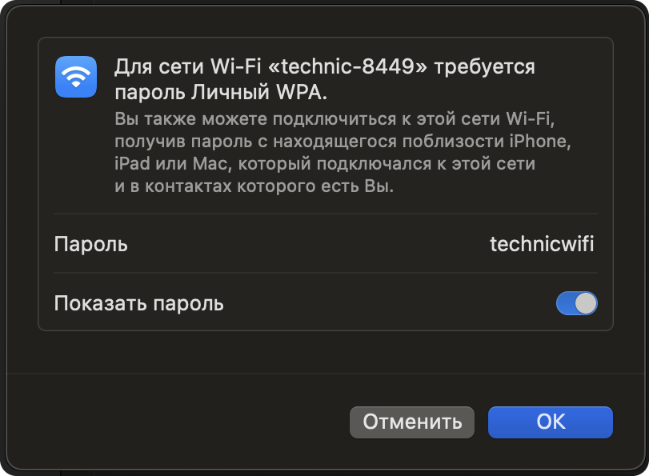

Подсказка Перед началом убедитесь, что eMMC с обрзом вставлена в OPi
На образе для Orangepi 5 pro преднастроена раздача Wi-Fi с SSID technic-xxxx, где xxxx – 4 случайных цифры, назначаемых при первом включении Orangepi 5 pro.
technicwifi.
Для изменения настроек Wi-Fi или получения более детальной информации о устройстве сети на Orangepi 5 pro прочитайте статью настройка Wi-Fi.